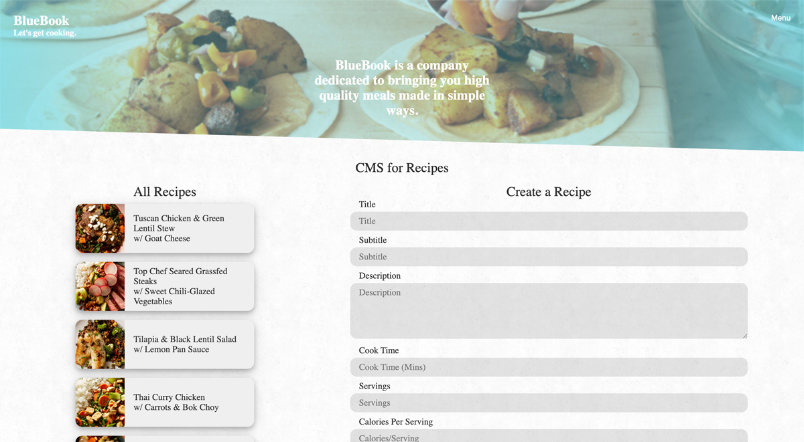

Overview
BlueBook is a website that pulls recipes from a database using PHP and SQL. The website is complete with a working Content Management System (CMS) that would allow an administrator to easily add, remove, update, and hide recipes.
Not only that, but the website was designed mobile first, including the CMS.
You can find a recipe yourself by checking out BlueBook here.
Context & Challenge
Styles
How to display content with style, in bulk, only show what users would want to know first. In this case, that would be the name, brief description, cook time, and calories.
Typography is extremely important here, line height, indentation, bold, etc. were considered heavily when developing the card view, and recipe page.
You can view the initial but complete style guide here.
Home Page:

Recipe Page:
As for the bells and whistles like the filter, my design brief included a range slider for cook time, and custom checkbox styles. I very well could have dived into the realm of range slider CSS, but it would have been out of scope, it turns out that designing this takes a few hundred lines of CSS.
Instead, the optimal approach would be to use a range slider and checkbox style generator to get the desired results.
I don’t need to know every detail start to finish to apply my design, the internet is a tool for this, others have done the legwork. I saved time and got my results.
Filter from style guide:
Filter after development:
Gathering the data
Entering the data from the client PDF’s into the database took considerable amount of time. I worked with fellow classmates by collaborating in a google sheet. Deciding on our information system, including naming schemes, distributing work, and validating the data.
Something extremely helpful was learning spreadsheet functions to manage and manipulate our data such as the Concatenation function, trimming using the LEN function, pasting matching format values, and using conditional formatting to validate data and find errors.
That all went into the shared data spreadsheet, however, my design had preferential differences in that data, such as extras, formatting, and more. By referencing and not copying the shared spreadsheet, it was possible to have my preferences, and always have up to date data if someone made changes, without reformatting each time.
For graphics, I noticed similarities in the types of pictures in the assets provided. Using key terms searches, I could find all the images per type, and used Photoshop scripts to quickly optimize all the graphics with little to no manual work needed.
Teaching myself PHP
Learning a coding language online isn’t an easy task, personally, I don’t like asking questions I can figure out myself. This was possible by improving my google skills, which sounds kind of silly, but it is a real skill. Researching Key Words, finding working examples as mentioned before, learning to manipulate pre-existing code is more efficient, other have done that legwork.

Take Away: Figuring out problems on your own is an indefinitely useful skill
What was special about this project is that it took place during Covid-19, my class I expected to be taught in person was now being taught entirely online which is less effective. Honestly, even 4 weeks into the 10 week course I was feeling lost learning PHP. But times like this call for extra measures.
I taught myself the majority of the logic and thinking behind PHP, as well as the hard-coding. A huge help to this process was finding good online tutorials and following the walk-throughs. This taught me so much about what PHP can do, and how it does it. Allowing me to not only be on-par with the weekly assignments, but be ahead of the class in terms of progress and understanding. Classmates even came to me for help.
Process & Insight
1. Wireframes and style guide
2. Gathered data using collaborative technologies
3. Built static pages ready for PHP injection
4. Optimized graphics
5. Learned necessary functionality of PHP
6. Injected PHP into static pages
7. Built search and filters
8. Build CMS
9. Added finishing touches
Higher thinking for problem solving
One problem I ran into while displaying the database data was a loop issue. Basically, the step title and step details for the recipes were stored in a single cell (directed as per my instructor), this did not allow for a basic loop to display the steps correctly.
The solution took breaking down what was happening in the current loop, and what needed to happen. My instructor suggested us to then just separate the data into two columns, however, being me, I went the difficult route to achieve higher understanding, and limit manual labor. Using Excel I was able to visualize this code easier, and eventually put together what actually needed to be done to create a working loop.
Here is the visualization:
To increment by two each loop through the array, the solution was actually quite simple once put together.
Take Away: A lot of higher thinking is conceivable when you have the motivation to do better
Title = Loop x 2 and Description + Title + 1. This got the effect of, 0 1, 2 3, 4 5, etc.
The Solution
The solution to problems I face mostly ended in success, however a concession to my own design brief was made. In my design, each recipe would display as a modal on the main page, however, PHP is a server side language that passes and accepts data by refreshing the page, therefore, I would need to use AJAX to get a dynamic modal.
So no modal, it was my own brief, but time constraints did not allow for also learning how to use AJAX. As much as I would have loved to.
Recipe Page Breif:
Recipe Page Actual:
Extras
Some extra features I included in my design:
Calorie Count
Cook Time
Protein
How-To section
Content Management System (CMS) w/ Add, Edit, Delete, and Hide.
You can find a recipe yourself by checking out BlueBook here.
The Results
My own expectations made this project much more difficult, but in the end gave me great experience and validated my design and development skills. I would say I am very satisfied with the turn out, though a design concession was made, I impressed myself with my development skills.